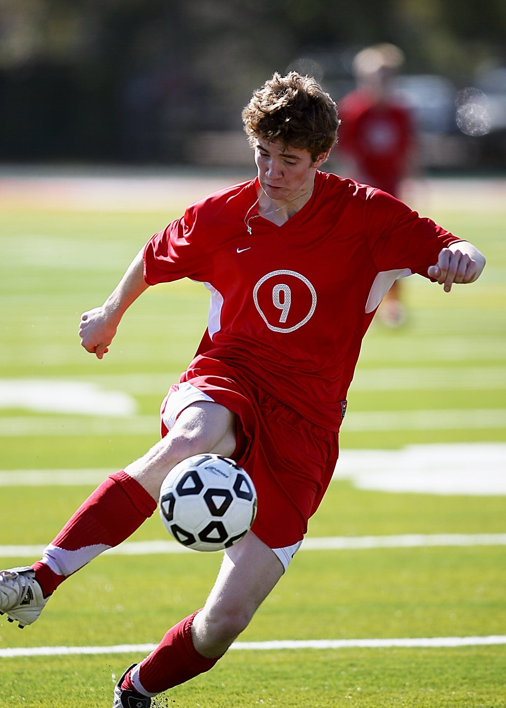

Nome do Jogador 1
- Nome: Gustavo
- Posição: Meio Campo
- Idade: 17 anos
- Clube Atual: Cruzeiro EC
Técnica Individual
- Controle de Bola: Habilidade do jogador em dominar e controlar a bola como Lil Gabi
- Drible: Capacidade de driblar adversários com sucesso ou seja Neymar puro
- Passe: Precisão e variedade nos passes como Messi
- Finalização: Eficiência ao finalizar a gol como o Cristiano Ronaldo de bicicleta,minha nossa,minha nossa,gooool.
Inteligência Tática
- Posicionamento: Da o passe que é caixa.
- Leitura de Jogo: Compreensão do jogo, capacidade de antecipar jogadas.
- Tomada de Decisão: Não erro um chute.
Físico e Condicionamento
- Resistência: Só fico na banheira.
- Velocidade: Rápido dependendo quem está assistindo.
- Força: Não preciso de força,basta inteligência.
Atitude e Comportamento
- Disciplina: Me colocar no banco,não vou entender legal.
- Trabalho em Equipe: Não sou fominha.
- Atitude Competitiva: Raça.
Adaptação a Situações de Jogo
- Comportamento sob Pressão: Pressão não existe essa palavra em meu vocabulário.
- Ajuste a Sistemas de Jogo: Sou tático.
Habilidade Mental
- Foco: Pai nosso.
- Resiliência: Ter raça.
- Confiança: Autoconfiança para executar habilidades técnicas.
Fair Play
- Atitude Ética: Atitude ética em relação ao jogo e aos colegas de equipe.
Comportamento Fora de Campo
- Atitude Acadêmica: Atitude acadêmica (se aplicável).
- Respeito: Respeito pelos colegas, treinadores e membros da equipe técnica.
Observações Adicionais
Sem observações adicionais,pois é perfeito jogando bola.